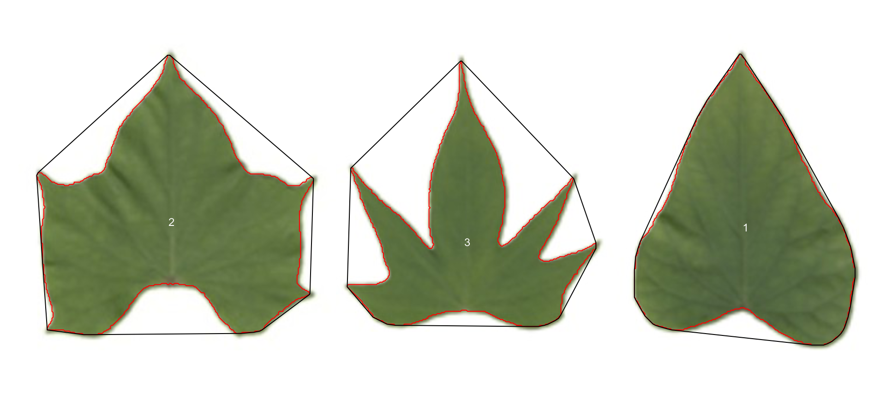

Analyzing objects in an image
Tiago Olivoto
2023-01-16
Source:vignettes/analyze_objects.Rmd
analyze_objects.RmdGetting started
The function analyze_objects() can be used to count
objects in an image. Let us start with a simple example with the image
object_300dpi.png available on the GitHub
page. To facilitate the image importation from this folder, a helper
function image_pliman() is used.
library(pliman)
#> |==========================================================|
#> | Tools for Plant Image Analysis (pliman 1.2.0) |
#> | Author: Tiago Olivoto |
#> | Type 'citation('pliman')' to know how to cite pliman |
#> | Type 'vignette('pliman_start')' for a short tutorial |
#> | Visit 'http://bit.ly/pkg_pliman' for a complete tutorial |
#> |==========================================================|
img <- image_pliman("objects_300dpi.jpg", plot = TRUE)
The above image was produced with Microsoft PowerPoint. It has a known resolution of 300 dpi (dots per inch) and shows four objects
- Larger square: 10 x 10 cm (100 cm2)
- Smaller square: 5 x 5 cm (25 cm2)
- Rectangle: 4 x 2 cm (8 cm2)
- Circle: 3 cm in diameter (~7.08 cm2)
To count the objects in the image we use
analyze_objects() and inform the image object (the only
mandatory argument). First, we use image_binary() to see
the most suitable index to segment the objects from the background. By
default, the R, G, B (first row) and their normalized values (second
row) are used.
image_binary(img)
Analyzing objects
img_res <-
analyze_objects(img,
marker = "area",
index = "B") # use blue index to segment
Adjusting object measures
The results were stored in img_res. Since there is no
scale declared in the above example, we have no idea about the actual
area of the objects in cm2, only in pixels. In this case, we
use get_measures() to adjust the measures from pixels to
metric units.
There are two main ways of adjusting the object measures (from pixels to cm, for example). The first one is to declare the known area, perimeter, or radius of a given object. The measure for the other objects will be then computed by a simple rule of three. The second one is by declaring a known image resolution in dpi (dots per inch). In this case, the perimeter, area, and radius will be adjusted by the informed dpi.
Declaring a known value
Since we have known the area of the larger square (object 1), let us adjust the area of the other objects in the image using that.
get_measures(img_res,
id = 1,
area ~ 100)
#> -----------------------------------------
#> measures corrected with:
#> object id: 1
#> area : 100
#> -----------------------------------------
#> Total : 40.002
#> Average : 13.334
#> -----------------------------------------
#> id x y area area_ch perimeter radius_mean radius_min
#> 2 2 1737.502 453.000 25.000 24.915 19.948 2.864 2.492
#> 3 3 1737.583 1296.320 7.050 7.051 10.085 1.494 1.482
#> 4 4 1737.504 939.004 7.952 7.902 11.916 1.669 0.989
#> radius_max radius_sd diam_mean diam_min diam_max major_axis minor_axis length
#> 2 3.528 0.314 5.728 4.983 7.056 5.778 5.769 4.996
#> 3 1.511 0.004 2.988 2.964 3.022 2.998 2.994 3.002
#> 4 2.227 0.424 3.338 1.977 4.454 4.615 2.298 3.990
#> width radius_ratio eccentricity theta solidity convexity elongation
#> 2 4.987 1.416 0.997 1.571 1.003 0.750 0.002
#> 3 3.000 1.020 0.984 0.055 1.000 0.908 0.001
#> 4 1.985 2.253 0.347 0.000 1.006 0.835 0.502
#> circularity circularity_haralick circularity_norm coverage asm con cor
#> 2 15.917 9.113 1.271 0.107 0.913 0.051 0.732
#> 3 14.428 362.586 1.154 0.030 0.819 0.106 0.822
#> 4 17.854 3.938 1.430 0.034 0.849 0.083 0.789
#> var idm sav sva sen ent dva den f12 f13
#> 2 1.095 0.987 21.900 475.289 0.107 0.116 0.051 0.054 0.518 0.280
#> 3 1.298 0.972 21.769 465.764 0.213 0.241 0.106 0.100 0.535 0.402
#> 4 1.197 0.978 21.812 469.379 0.163 0.183 0.083 0.081 0.559 0.364The same can be used to adjust the measures based on the perimeter or radius. Let us adjust the perimeter of objects by the perimeter of object 2 (20 cm).
get_measures(img_res,
id = 2,
perimeter ~ 20)
#> -----------------------------------------
#> measures corrected with:
#> object id: 2
#> perimeter : 20
#> -----------------------------------------
#> Total : 62.096
#> Average : 20.699
#> -----------------------------------------
#> id x y area area_ch perimeter radius_mean radius_min
#> 1 1 669.000 798.000 100.524 100.354 40.037 5.748 5.008
#> 3 3 1737.583 1296.320 7.087 7.088 10.112 1.498 1.486
#> 4 4 1737.504 939.004 7.994 7.943 11.947 1.673 0.991
#> radius_max radius_sd diam_mean diam_min diam_max major_axis minor_axis length
#> 1 7.078 0.630 11.495 10.016 14.155 11.577 11.577 14.155
#> 3 1.515 0.004 2.996 2.971 3.030 3.006 3.002 3.010
#> 4 2.233 0.425 3.347 1.982 4.466 4.627 2.304 4.001
#> width radius_ratio eccentricity theta solidity convexity elongation
#> 1 14.149 1.413 0.999 0.784 1.002 0.750 0.000
#> 3 3.008 1.020 0.984 0.055 1.000 0.908 0.001
#> 4 1.990 2.253 0.347 0.000 1.006 0.835 0.502
#> circularity circularity_haralick circularity_norm coverage asm con cor
#> 1 15.946 9.116 1.271 0.427 0.946 0.045 0.722
#> 3 14.428 362.586 1.154 0.030 0.819 0.106 0.822
#> 4 17.854 3.938 1.430 0.034 0.849 0.083 0.789
#> var idm sav sva sen ent dva den f12 f13
#> 1 1.081 0.994 21.931 478.222 0.069 0.075 0.045 0.029 0.679 0.273
#> 3 1.298 0.972 21.769 465.764 0.213 0.241 0.106 0.100 0.535 0.402
#> 4 1.197 0.978 21.812 469.379 0.163 0.183 0.083 0.081 0.559 0.364Declaring the image resolution
If the image resolution is known, all the measures will be adjusted
according to this resolution. Let us to see a numerical example with
pixels_to_cm(). This function converts the number of pixels
(\(px\)) to cm, considering the image
resolution in \(dpi\), as follows:
\(cm = px \times (2.54/dpi)\). Since we
know the number of pixels of the larger square, its perimeter in cm is
given by
# number of pixels for the highest square perimeter
ls_px <- img_res$results$perimeter[1]
pixels_to_cm(px = ls_px, dpi = 300)
#> [1] 39.9294The perimeter of object 1 adjusted by the image resolution is very
close to the true (40 cm). Bellow, the values of all measures are
adjusted by declaring the dpi argument in
get_measures().
get_measures(img_res, dpi = 300)
#> id x y area area_ch perimeter radius_mean radius_min
#> 1 1 669.000 798.000 99.982 99.813 39.929 5.732 4.994
#> 2 2 1737.502 453.000 24.996 24.911 19.946 2.864 2.491
#> 3 3 1737.583 1296.320 7.049 7.050 10.085 1.494 1.482
#> 4 4 1737.504 939.004 7.951 7.900 11.915 1.669 0.988
#> radius_max radius_sd diam_mean diam_min diam_max major_axis minor_axis length
#> 1 7.058 0.629 11.464 9.989 14.117 11.546 11.546 14.117
#> 2 3.528 0.314 5.728 4.983 7.055 5.778 5.768 4.995
#> 3 1.511 0.004 2.988 2.963 3.022 2.998 2.994 3.002
#> 4 2.227 0.424 3.338 1.977 4.453 4.614 2.297 3.990
#> width radius_ratio eccentricity theta solidity convexity elongation
#> 1 14.111 1.413 0.999 0.784 1.002 0.750 0.000
#> 2 4.987 1.416 0.997 1.571 1.003 0.750 0.002
#> 3 3.000 1.020 0.984 0.055 1.000 0.908 0.001
#> 4 1.985 2.253 0.347 0.000 1.006 0.835 0.502
#> circularity circularity_haralick circularity_norm coverage asm con cor
#> 1 15.946 9.116 1.271 0.427 0.946 0.045 0.722
#> 2 15.917 9.113 1.271 0.107 0.913 0.051 0.732
#> 3 14.428 362.586 1.154 0.030 0.819 0.106 0.822
#> 4 17.854 3.938 1.430 0.034 0.849 0.083 0.789
#> var idm sav sva sen ent dva den f12 f13
#> 1 1.081 0.994 21.931 478.222 0.069 0.075 0.045 0.029 0.679 0.273
#> 2 1.095 0.987 21.900 475.289 0.107 0.116 0.051 0.054 0.518 0.280
#> 3 1.298 0.972 21.769 465.764 0.213 0.241 0.106 0.100 0.535 0.402
#> 4 1.197 0.978 21.812 469.379 0.163 0.183 0.083 0.081 0.559 0.364Counting crop grains
Here, we will count the grains in the image
soybean_touch.jpg. This image has a cyan background and
contains 30 soybean grains that touch with each other. Two segmentation
strategies are used. The first one is by using is image segmentation
based on color indexes.
soy <- image_pliman("soybean_touch.jpg")
grain <- image_pliman("soybean_grain.jpg")
background <- image_pliman("la_back.jpg")
image_combine(soy, grain, background, ncol = 3)
The function analyze_objects() segment the image using
as default the normalized blue index, as follows \(NB = (B/(R+G+B))\), where \(R\), \(G\), and \(B\) are the red, green, and blue bands.
Objects are count and the segmented objects are colored with random
permutations.
count2 <-
analyze_objects(soy,
index = "NB") # defaultUsers can set show_contour = FALSE to remove the contour
line and identify the objects (in this example the grains) by using the
arguments marker = "id". The color of the background can
also be changed with col_background.
count <-
analyze_objects(soy,
show_contour = FALSE,
marker = "id",
show_segmentation = FALSE,
col_background = "white",
index = "NB") # default
# Get the object measures
(measures <- get_measures(count))
#> id x y area area_ch perimeter radius_mean radius_min radius_max
#> 1 1 245.803 509.791 2275 2302 183.510 26.472 22.936 29.438
#> 2 2 538.039 401.850 2299 2270 178.196 26.610 24.955 28.703
#> 3 3 237.650 339.809 2311 2289 181.024 26.699 23.993 29.434
#> 4 4 345.335 105.757 2443 2413 185.610 27.491 24.340 30.532
#> 5 5 277.559 260.583 2161 2123 171.711 25.771 24.228 28.046
#> 6 6 406.963 77.422 2304 2268 178.782 26.623 24.078 30.036
#> 7 7 301.181 369.957 2212 2206 180.782 26.080 23.483 28.870
#> 8 8 434.675 553.687 2169 2146 174.539 25.864 23.629 29.068
#> 9 9 594.703 47.304 2212 2175 176.539 26.109 23.334 29.788
#> 10 10 469.015 56.456 2316 2283 181.610 26.810 23.160 31.188
#> 11 11 461.197 155.995 2173 2143 175.267 25.917 23.324 29.863
#> 12 12 202.009 203.395 2194 2172 177.953 26.056 22.663 30.227
#> 13 13 192.800 379.576 2208 2185 176.681 26.093 23.560 29.002
#> 14 14 246.038 221.425 2121 2102 173.853 25.573 21.895 28.910
#> 15 15 448.377 296.211 2072 2037 171.125 25.230 23.316 27.037
#> 16 16 250.393 436.911 1961 1929 163.539 24.538 22.737 26.334
#> 17 17 296.171 186.521 2058 2020 166.782 25.145 22.767 27.242
#> 18 18 403.438 169.049 2038 2008 168.539 25.020 22.821 27.298
#> 19 19 550.085 200.504 1932 1897 162.296 24.350 22.487 26.598
#> 20 20 84.680 206.347 2177 2148 174.782 25.879 22.619 28.800
#> 21 21 321.983 321.567 1976 1990 178.196 24.619 21.101 27.313
#> 22 22 242.957 388.558 1924 1940 172.368 24.314 21.962 27.542
#> 23 23 106.370 432.004 1915 1889 163.711 24.239 22.335 26.245
#> 24 24 492.960 344.259 1889 1870 163.125 24.072 21.862 26.127
#> 25 25 721.772 586.265 1910 1876 162.296 24.219 21.774 26.993
#> 26 26 510.531 158.372 1783 1770 163.024 23.437 21.573 26.558
#> 27 27 281.047 474.122 1825 1928 179.267 23.575 18.342 27.076
#> 28 28 92.845 569.427 1746 1713 155.468 23.138 21.048 25.387
#> 29 29 273.319 547.460 1708 1730 165.125 22.789 18.101 25.637
#> 30 30 265.270 143.384 1368 1341 137.569 20.384 18.507 22.038
#> radius_sd diam_mean diam_min diam_max major_axis minor_axis length width
#> 1 1.369 52.943 45.872 58.875 56.136 51.891 56.586 51.583
#> 2 0.945 53.219 49.910 57.406 56.459 51.876 56.542 52.424
#> 3 1.240 53.398 47.986 58.869 57.491 51.252 57.201 51.990
#> 4 1.757 54.982 48.680 61.063 60.932 51.063 61.021 51.024
#> 5 0.803 51.543 48.456 56.092 54.123 50.894 54.022 50.556
#> 6 1.664 53.245 48.155 60.071 58.944 49.797 59.502 50.790
#> 7 1.333 52.160 46.965 57.740 56.351 50.055 56.615 49.892
#> 8 1.463 51.727 47.259 58.136 56.627 48.810 57.427 49.463
#> 9 1.847 52.217 46.668 59.576 58.461 48.209 59.167 48.534
#> 10 2.338 53.619 46.320 62.375 61.186 48.218 61.037 48.694
#> 11 1.667 51.835 46.647 59.727 57.284 48.349 58.434 48.632
#> 12 2.031 52.112 45.325 60.453 58.518 47.842 59.063 47.937
#> 13 1.542 52.186 47.120 58.005 57.485 48.932 57.797 49.403
#> 14 1.790 51.146 43.789 57.820 56.880 47.574 56.921 48.701
#> 15 1.004 50.460 46.633 54.074 53.966 48.903 53.265 47.535
#> 16 0.793 49.076 45.473 52.668 51.590 48.465 51.565 47.982
#> 17 1.164 50.290 45.535 54.485 54.305 48.274 53.142 47.276
#> 18 1.157 50.039 45.642 54.596 54.020 48.078 54.116 48.308
#> 19 0.885 48.701 44.973 53.196 51.854 47.472 52.597 47.711
#> 20 1.749 51.757 45.238 57.599 57.537 48.220 56.198 47.283
#> 21 1.546 49.238 42.202 54.625 52.455 48.269 54.100 48.074
#> 22 1.045 48.628 43.923 55.085 50.535 48.682 51.224 49.964
#> 23 0.944 48.479 44.671 52.490 51.943 46.960 52.100 47.325
#> 24 1.145 48.144 43.724 52.254 52.080 46.214 51.243 46.039
#> 25 1.344 48.438 43.548 53.987 53.070 45.847 53.447 45.691
#> 26 0.998 46.874 43.146 53.116 48.664 46.904 48.750 47.366
#> 27 2.414 47.151 36.685 54.152 50.078 47.132 53.604 48.031
#> 28 1.111 46.276 42.096 50.773 50.216 44.300 50.229 43.910
#> 29 1.592 45.578 36.202 51.275 49.060 44.733 49.801 45.637
#> 30 0.824 40.768 37.015 44.075 43.753 39.838 43.549 40.227
#> radius_ratio eccentricity theta solidity convexity elongation circularity
#> 1 1.283 0.893 -0.889 0.988 0.886 0.088 14.803
#> 2 1.150 0.853 -0.841 1.013 0.881 0.073 13.812
#> 3 1.227 0.816 -0.565 1.010 0.911 0.091 14.180
#> 4 1.254 0.754 -0.993 1.012 0.915 0.164 14.102
#> 5 1.158 0.896 -0.218 1.018 0.898 0.064 13.644
#> 6 1.247 0.803 1.134 1.016 0.877 0.146 13.873
#> 7 1.229 0.832 -1.470 1.003 0.914 0.119 14.775
#> 8 1.230 0.778 0.952 1.011 0.904 0.139 14.045
#> 9 1.277 0.751 -1.030 1.017 0.913 0.180 14.090
#> 10 1.347 0.682 1.296 1.014 0.865 0.202 14.241
#> 11 1.280 0.752 1.074 1.014 0.902 0.168 14.136
#> 12 1.334 0.724 -1.114 1.010 0.931 0.188 14.434
#> 13 1.231 0.777 0.951 1.011 0.908 0.145 14.138
#> 14 1.320 0.762 -1.294 1.009 0.863 0.144 14.250
#> 15 1.160 0.853 -1.552 1.017 0.854 0.108 14.133
#> 16 1.158 0.911 -1.360 1.017 0.883 0.069 13.638
#> 17 1.197 0.842 1.539 1.019 0.909 0.110 13.516
#> 18 1.196 0.849 -1.098 1.015 0.914 0.107 13.938
#> 19 1.183 0.849 0.714 1.018 0.885 0.093 13.634
#> 20 1.273 0.783 0.011 1.014 0.916 0.159 14.032
#> 21 1.294 0.837 1.500 0.993 0.841 0.111 16.070
#> 22 1.254 0.957 -0.891 0.992 0.873 0.025 15.442
#> 23 1.175 0.853 0.746 1.014 0.904 0.092 13.995
#> 24 1.195 0.828 1.534 1.010 0.903 0.102 14.087
#> 25 1.240 0.802 1.318 1.018 0.887 0.145 13.791
#> 26 1.231 0.970 -1.268 1.007 0.890 0.028 14.906
#> 27 1.476 0.852 0.074 0.947 0.877 0.104 17.609
#> 28 1.206 0.818 0.793 1.019 0.906 0.126 13.843
#> 29 1.416 0.931 -0.583 0.987 0.887 0.084 15.964
#> 30 1.191 0.894 -0.494 1.020 0.900 0.076 13.834
#> circularity_haralick circularity_norm coverage asm con cor var
#> 1 19.339 1.221 0.004 0.068 0.527 0.961 7.681
#> 2 28.149 1.138 0.004 0.089 0.603 0.959 8.373
#> 3 21.526 1.169 0.004 0.085 0.702 0.950 7.982
#> 4 15.650 1.161 0.005 0.087 0.730 0.945 7.576
#> 5 32.103 1.126 0.004 0.086 0.834 0.944 8.461
#> 6 15.995 1.143 0.004 0.086 0.750 0.951 8.632
#> 7 19.567 1.220 0.004 0.069 0.783 0.951 9.055
#> 8 17.679 1.159 0.004 0.081 0.621 0.952 7.448
#> 9 14.135 1.163 0.004 0.060 0.932 0.926 7.332
#> 10 11.466 1.174 0.004 0.083 0.834 0.943 8.278
#> 11 15.551 1.166 0.004 0.092 0.735 0.949 8.245
#> 12 12.826 1.192 0.004 0.098 0.652 0.946 6.989
#> 13 16.917 1.166 0.004 0.087 0.720 0.950 8.143
#> 14 14.287 1.176 0.004 0.085 0.775 0.945 8.084
#> 15 25.126 1.168 0.004 0.069 0.627 0.955 8.003
#> 16 30.953 1.127 0.004 0.092 0.668 0.948 7.459
#> 17 21.601 1.115 0.004 0.109 0.783 0.944 8.011
#> 18 21.631 1.152 0.004 0.098 0.806 0.938 7.489
#> 19 27.524 1.127 0.004 0.075 0.670 0.953 8.066
#> 20 14.796 1.158 0.004 0.096 0.605 0.948 6.862
#> 21 15.929 1.332 0.004 0.077 0.899 0.951 10.134
#> 22 23.276 1.280 0.004 0.072 1.210 0.924 8.970
#> 23 25.681 1.158 0.004 0.091 0.719 0.943 7.276
#> 24 21.026 1.166 0.004 0.076 0.626 0.945 6.738
#> 25 18.026 1.141 0.004 0.067 0.610 0.952 7.327
#> 26 23.473 1.235 0.003 0.071 1.008 0.938 9.137
#> 27 9.767 1.464 0.003 0.067 1.000 0.945 10.067
#> 28 20.819 1.147 0.003 0.066 0.648 0.952 7.773
#> 29 14.311 1.327 0.003 0.063 0.883 0.948 9.524
#> 30 24.749 1.153 0.003 0.065 0.855 0.931 7.239
#> idm sav sva sen ent dva den f12 f13
#> 1 0.810 40.475 1565.811 1.237 1.400 0.527 0.347 0.569 0.820
#> 2 0.807 40.709 1591.123 1.184 1.355 0.603 0.364 0.560 0.807
#> 3 0.794 40.710 1590.260 1.175 1.358 0.702 0.386 0.535 0.793
#> 4 0.801 40.638 1582.907 1.175 1.359 0.730 0.385 0.544 0.798
#> 5 0.795 40.919 1606.437 1.202 1.396 0.834 0.392 0.542 0.804
#> 6 0.785 42.703 1753.433 1.186 1.378 0.750 0.395 0.528 0.792
#> 7 0.801 39.534 1497.327 1.247 1.435 0.783 0.387 0.566 0.823
#> 8 0.798 39.424 1485.771 1.206 1.380 0.621 0.369 0.550 0.806
#> 9 0.734 40.409 1560.475 1.216 1.470 0.932 0.435 0.445 0.755
#> 10 0.790 42.460 1731.949 1.184 1.382 0.834 0.397 0.520 0.788
#> 11 0.803 40.788 1597.759 1.171 1.355 0.735 0.382 0.546 0.799
#> 12 0.811 41.949 1688.375 1.144 1.309 0.652 0.369 0.554 0.796
#> 13 0.790 42.627 1743.486 1.206 1.392 0.720 0.386 0.536 0.799
#> 14 0.789 41.454 1648.110 1.198 1.391 0.775 0.395 0.528 0.794
#> 15 0.789 40.023 1532.947 1.222 1.404 0.627 0.373 0.540 0.804
#> 16 0.809 40.529 1575.271 1.158 1.329 0.668 0.372 0.553 0.799
#> 17 0.785 41.522 1658.845 1.129 1.324 0.783 0.401 0.511 0.773
#> 18 0.791 41.484 1651.827 1.152 1.348 0.806 0.397 0.518 0.781
#> 19 0.788 40.989 1609.120 1.220 1.404 0.670 0.381 0.538 0.802
#> 20 0.804 41.774 1672.857 1.154 1.329 0.605 0.365 0.538 0.790
#> 21 0.772 39.460 1496.754 1.236 1.449 0.899 0.415 0.518 0.798
#> 22 0.746 38.571 1425.791 1.220 1.478 1.210 0.459 0.463 0.768
#> 23 0.788 40.257 1552.140 1.170 1.359 0.719 0.386 0.522 0.786
#> 24 0.810 39.163 1464.209 1.191 1.363 0.626 0.363 0.550 0.803
#> 25 0.795 37.981 1375.070 1.234 1.407 0.610 0.369 0.557 0.814
#> 26 0.742 38.879 1448.188 1.241 1.486 1.008 0.444 0.475 0.777
#> 27 0.758 39.828 1523.209 1.254 1.487 1.000 0.435 0.502 0.794
#> 28 0.778 40.417 1561.726 1.234 1.430 0.648 0.381 0.525 0.799
#> 29 0.759 39.517 1496.381 1.266 1.484 0.883 0.418 0.516 0.802
#> 30 0.750 39.752 1507.304 1.240 1.471 0.855 0.421 0.480 0.778In the following example, we will select objects with an area above
the average of all objects by using lower_size = 2057.36.
Additionally, we will use the argument
show_original = FALSE to show the results as colors
(non-original image).
analyze_objects(soy,
marker = "id",
show_original = FALSE,
lower_size = 2057.36,
index = "NB") # default
Users can also use the topn_* arguments to select the
top n objects based on either smaller or largest areas.
Let’s see how to point out the 5 grains with the smallest area, showing
the original grains in a blue background. We will also use the argument
index to choose a personalized index to segment the image.
Just for comparison, we will set up explicitly the normalized blue index
by calling index = "B/(R+G+B)".
analyze_objects(soy,
marker = "id",
topn_lower = 5,
col_background = "blue",
index = "B/(R+G+B)") # default
#> Index 'B/(R+G+B)' is not available. Trying to compute your own index.
Using sample palettes
Sometimes it is difficult to choose an image index that segments the
image efficiently (even using index ). In
pliman users have an alternative image segmentation
strategy that is using sample color palettes. In this case, users can
say to analyze_objects which color palettes are to be used
for background and foreground. A generalized linear model (binomial
family) is then used to predict the value of each pixel (background or
foreground). Let’s see how the grains of the above image can be counted
with this strategy.
analyze_objects(img = soy,
background = background,
foreground = grain)
Provided that the images are stored in the current working directory (or subdirectory), users can count the objects with no need to first import the image into the R environment. In this case, image names need to be declared as characters. Assuming that soy, background, and grain are the images saved into the current working directory, the same result as above is obtained with
analyze_objects(img = "soy",
background = "background",
foreground = "grain")Leaf shape
The function analyze_objects() computes a range of
object features that can be used to study leaf shape. As a motivating
example, I will use the image potato_leaves.png, which was
gathered from Gupta et al. (2020)1
potato <- image_pliman("potato_leaves.jpg", plot = TRUE)
pot_meas <-
analyze_objects(potato,
watershed = FALSE,
marker = "id",
show_chull = TRUE) # shows the convex hull
print(pot_meas$results)
#> id x y area area_ch perimeter radius_mean radius_min
#> 1 1 854.5474 224.0629 51430 54607 1012.016 131.5497 91.95379
#> 2 2 197.8351 217.8552 58954 76589 1253.354 140.1864 69.03862
#> 3 3 536.1969 240.2039 35207 63139 1529.178 110.1025 37.83161
#> radius_max radius_sd diam_mean diam_min diam_max major_axis minor_axis
#> 1 198.8891 26.16943 263.0995 183.90758 397.7781 305.8445 242.3145
#> 2 192.3839 28.60992 280.3728 138.07724 384.7677 318.2672 274.2255
#> 3 188.6550 35.51731 220.2051 75.66323 377.3100 253.8387 243.5342
#> length width radius_ratio eccentricity theta solidity convexity
#> 1 345.9637 254.8631 2.162924 0.6187158 1.39375709 0.9418206 0.9065887
#> 2 329.8079 331.2327 2.786612 0.7963295 -0.09990644 0.7697450 0.7354356
#> 3 293.0837 310.0123 4.986702 0.9166288 1.09394717 0.5576110 0.5567300
#> elongation circularity circularity_haralick circularity_norm coverage
#> 1 0.263324164 19.91400 5.026847 1.598114 0.13395776
#> 2 -0.004319976 26.64616 4.899922 2.139981 0.15355523
#> 3 -0.057760358 66.41818 3.099969 5.386599 0.09170233
#> asm con cor var idm sav sva sen
#> 1 0.1730964 0.2799291 0.9147732 2.642259 0.9062787 23.30290 509.1374 0.8786173
#> 2 0.2506250 0.2582324 0.8731413 2.017796 0.9046689 24.93465 588.1755 0.7610581
#> 3 0.3018126 0.4628978 0.8084292 2.208164 0.8917999 23.71801 535.5916 0.6697593
#> ent dva den f12 f13
#> 1 0.9537644 0.2799291 0.2329437 0.6269611 0.7625485
#> 2 0.8341535 0.2582324 0.2328228 0.5585753 0.6900250
#> 3 0.7647976 0.4628978 0.2712561 0.4845078 0.6219234Three key measures (in pixel units) are:
-
areathe area of the object. -
area_chthe area of the convex hull. -
perimeterthe perimeter of the object.
Using these measures, circularity and solidity are computed as shown in (Gupta et al, 2020).
\[ circularity = 4\pi(area / perimeter^2)\]
\[solidity = area / area\_ch\]
Circularity is influenced by serrations and lobing. Solidity is sensitive to leaves with deep lobes, or with a distinct petiole, and can be used to distinguish leaves lacking such structures. Unlike circularity, it is not very sensitive to serrations and minor lobings, since the convex hull remains largely unaffected.
Object contour
Users can also obtain the object contour and convex hull as follows:
cont <-
object_contour(potato,
watershed = FALSE,
show_image = FALSE)
plot(potato)
plot_contour(cont, col = "red", lwd = 3)
Convex hull
The function object_contour() returns a list with the
coordinate points for each object contour that can be further used to
obtain the convex hull with conv_hull().
conv <- conv_hull(cont)
plot(potato)
plot_contour(conv, col = "red", lwd = 3)Area of the convex hull
Then, the area of the convex hull can be obtained with
poly_area().
(area <- poly_area(conv))
#> 1 2 3
#> 54607.5 76589.5 63139.0Leaves as base plot
# create a data frame for contour and convex hull
df_cont <-
do.call(rbind,
lapply(seq_along(cont), function(i){
transform(cont[[i]], object = names(cont[i]))
}))
df_conv <-
do.call(rbind,
lapply(seq_along(conv), function(i){
transform(conv[[i]], object = names(conv[i]))
}))
# plot the objects
palette(c("red","blue","green"))
with(df_cont,
plot(X1, X2,
cex = 0.5,
col = object,
xlab = NA,
ylab = NA,
axes = F))
with(subset(df_conv, object == 1),
polygon(x, y,
col = rgb(1, 0, 0, 0.2),
border = NA))
with(subset(df_conv, object == 2),
polygon(x, y,
col = rgb(0, 0, 1, 0.2),
border = NA))
with(subset(df_conv, object == 3),
polygon(x, y,
col = rgb(0, 1, 0, 0.2),
border = NA))
Or do the same with ggplot2
library(ggplot2)
ggplot(df_cont, aes(X1, X2, group = object)) +
geom_polygon(aes(fill = object)) +
geom_polygon(data = df_conv,
aes(x, y, fill = object),
alpha = 0.3) +
theme_void() +
theme(legend.position = "bottom")Batch processing
In plant image analysis, frequently it is necessary to process more
than one image. For example, in plant breeding, the number of grains per
plant (e.g., wheat) is frequently used in the indirect selection of
high-yielding plants. In pliman, batch processing can be
done when the user declares the argument pattern.
The following example would be used to count the objects in the
images with a pattern name "trat" (e.g.,
"trat1", "trat2", "tratn") saved
into the subfolder “originals" in the current working
directory. The processed images will be saved into the subfolder
"processed". The object list_res will be a
list with two objects (results and statistics)
for each image.
To speed up the processing time, especially for a large number of
images, the argument parallel = TRUE can be used. In this
case, the images are processed asynchronously (in parallel) in separate
R sessions running in the background on the same machine.
The number of sections is set up to 50% of available cores. This number
can be controlled explicitly with the argument workers.
list_res <-
analyze_objects(pattern = "trat", # matches the name pattern in 'originals' subfolder
dir_original = "originals",
dir_processed = "processed",
parallel = TRUE, # parallel processing
workers = 8, # 8 multiple sections
save_image = TRUE)